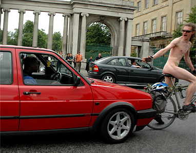
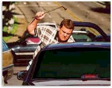
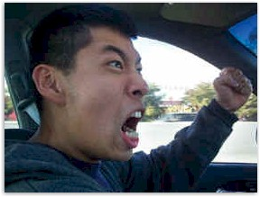
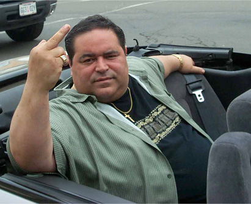
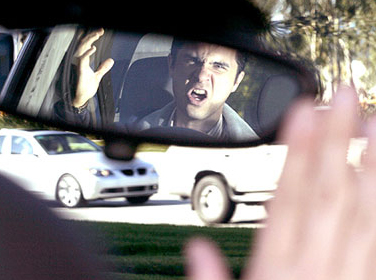
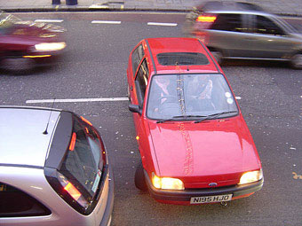
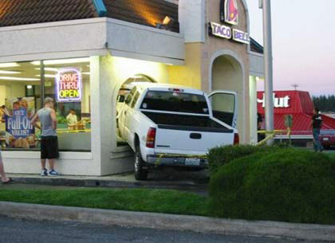
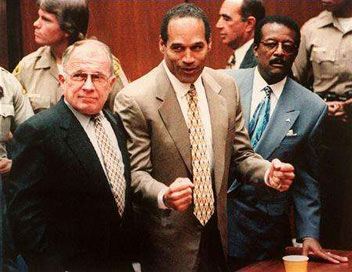
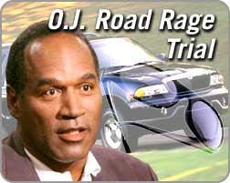
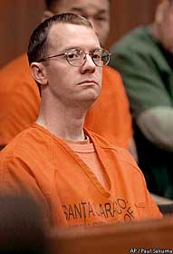

|
 Road RageAccording to the Department of Transportation, road rage takes place when "an angry or impatient motorist intentionally injures or kills another motorist, passenger, or pedestrian -- or attempts or threatens to injure or kill another motorist, passenger or pedestrian". It can be likened to any other traffic-related incident by its willful and criminal nature. Nearly 2,000 individuals suffer injuries from raging motorists each year. Nobody knows how many hundreds of thousands of motorists just get the finger. In 1997 Dr. Leon James, Professor of Traffic Psychology at the University of Hawaii, offered congressional testimony about the subject during a Subcommittee on Surface Transportation and Infrastructure. He noted that road rage has deeply human psychological roots, ranging from the innate, subconscious tendency toward territorialism which lives inside us all -- to our individually accumulated perceptions of the world we live in today. Children inherit  aggressive and dangerous driving patterns not only from their parents and friends, but by absorbing behaviors depicted in movies and video games. Ask any cab driver who the most annoying motorists on the road are, and it's likely he'll say "other cab drivers". Road ragers typically exchange little more than a vindictive turn of phrase or an inappropriate gesture, but road rage cases remain exciting to news bureaus because of their ability to showcase raw human emotions finally being tapped. Police reports around the world are filled with perpetrators who have figured out how to communicate their many frustrations with award-winning creativity and innovation. Road rage presents crime enthusiasts with plenty of girl-on-girl action. Woman driver Gena Foster of Alabama died of a gunshot wound to the face after getting out of her car to confront the woman driver behind her. "She spit on me and I killed her," Shirley Henson quipped to the jury. "I always follow too closely." In Rollinsford, New Hampshire, a female motorist irked by slow-moving traffic exited her van, attacked a construction worker and dragged her to the ground, repeatedly slapping her face with a sign labeled Caution: Construction Ahead. Departments of Transportation in nearly every state confess that road crews are frequent victims of road rage -- cursed at, spat upon, threatened with guns -- because they're stationary, unprotected human targets standing in the open air with nowhere to run. Between 2000 and 2001, when California entered one of the hottest summers on record and Enron was jacking up the price of electricity, it was not uncommon for a daily police blotter to cite an angry motorist who jumped from his car to attack a meter reader or utility crew, sometimes by pelting them with eggs or rocks. The most popular method of engaging rage is to "flip off" your fellow motorists. Make sure you don't accidentally share your flipped bird with an off-duty cop, like citizen Daniel Shane did in November of 2000. When both vehicles screeched to a halt and the participants in the dispute climbed out to ascertain how best they could each "bring it on," officer Dwight Ray's response was to hose mace in Shane's eyes, and spray a few more squirts in the face of Shane's 5-year-old son as well. Officer Ray was suspended for three weeks. The American Automobile Association has isolated four specific character traits which plague today's road ragers. Individuals easily predisposed to anger constitute the most obvious segment of the population. Anger is a momentary flare-up which quickly dies down, but a rapid sequence of hard spikes on one's emotional chart, when left untreated, can lead to perpetual righteous indignation. These drivers get angry at other drivers, whether they move too fast, or move too slow, or occupy what the road rager considers to be "the wrong lane". Everyday traffic occurrences which are part and parcel of standard merging procedure can take on a vicious, screaming life of their own. Road ragers are quick to personalize a common affront: you cut them off, forcing them to slam on their brakes. The anger is further compounded when a road rager is acutely aware his brakes haven't been serviced recently; he knows that every unnecessary application of his foot on the pedal leads him closer to the repair shop. And do you really have to merge so slowly? Grow a cock and balls, you goddamn jizz bucket. If it's not man versus man, or man versus woman, it's man versus society: everyone is moving too slowly. The multi-lane highway is beginning to narrow, and motorists in front of you are still half-riding the shoulder. Pick a lane and stick with it, you stupid Ching Ping Chinaman. Even the passengers in your own car become a reliable source of anger: nothing makes a road rager more pissed off than being told by a spouse or co-worker to just calm down. Impatience is the second weightiest matter, and these feelings can be triggered before the car is even in motion. Anticipation of the same monotonous jam during morning traffic manifests itself as a notable tension in the road rager's neck and shoulders. He's impatient for his passengers to kiss their stupid wives goodbye and get into the goddamn car, annoyed that he's been put in charge of a car pool. He can already anticipate how bloody fuckin' awful it's going to be driving his co-workers back home in reverse order, eight or nine hours from now. Road ragers regularly perceive themselves to be so "behind schedule" that the exhausting length of time it takes for the car engine to warm up is often enough to trigger a burst of adrenaline. The never-ending stream of stop signs at four-way intersections, at which fellow motorists suddenly forget the right-goes-first rule. The blinking stoplights which have clearly been broken for months, which fail to let an adequate number of cars go through per cycle, are worthy of being ignored and summarily run straight through. The perpetual impatience and frustration associated with locating an adequate (and free) parking space is a constant irritant of road ragers, as is watching slow-moving pedestrians as they push their shopping carts and wheelchairs in front of them at the crosswalk. Another studied character trait among road ragers is their predisposition toward competition. The road becomes a speeding courseway for gaming, in which the act of jockeying for a better position is paramount to achieving an arbitrarily assigned goal. A sense of one-upsmanship can start as simply as a personal bet with oneself, such as when a road rager decides he's going to beat the clock, or best his previous efforts. This time I'll make it to Palo Alto by 8:25. Other vehicles on the road are turned into chess pieces -- plodding, retarded pawns to maneuver around and ultimately remove as obstacles. Lane changes are made quickly and with greater attempts at precision. Speed combined with a thumping movie soundtrack makes the competitive road rager grow increasingly deluded that he's actually a trained Hollywood stunt driver on a closed course. Get around the blue car. Then zip behind the red truck into lane four. Pointless, split-second gambles are made on which lane in front of him will open up the fastest -- even when there's a tollbooth ahead. It is, after all, important to idle in the fastest-moving queue. Competitive motorists genuinely believe they're excellent drivers. They're typically between the ages of 17 and 27, often Grand Theft Auto enthusiasts, military personnel, or off-duty law enforcement officers who for one reason or another feel perfectly entitled to dominate the freeway. Their masculine hard-top Ford Mustangs, muscle hot-rod Honda Civics with ridiculous wing-tipped spoilers, and loud shitty music blasting from eighteen speakers often signal a competitive road rager from miles away. The fourth-most analyzed personality trait in a troublesome motorist is also the most recognizable. It's the desire one has to meter out revenge -- in all its subtle and classic forms -- to other drivers. The need to exact punishment for a perceived injustice, however slight, is a straightforward human quality which extends way beyond the world of the automobile. Even failing to acknowledge an slight act of courtesy can be grounds for a fight. You let someone in, and then they don't wave. The impulse to retaliate is the often result of feeling injured or invaded on the road, and can lead to further instances of rage ranging from repetitive horn honks, screaming at other drivers, or employing a well-extended middle finger. More and more states in our blessed union are passing Aggressive Driving legislation, much of which is comprised of language so abstract you might think it was part of the Patriot Act. In New York, you can receive a traffic citation for "changing lanes or speed in a manner which serves no legitimate purpose". In Nebraska, you can get pulled over for "honking the horn repeatedly". In Maryland, drivers who deliberately drive "in a discourteous manner" are also subject to the same summary action. Less than a decade after O.J. Simpson was found not demonstrably guilty of committing the twentieth century's most famous double homicide, he found himself facing 16 years in prison for a particularly disturbing bit of road rage in Miami, Florida. On December 4, 2000, 55-year-old Jeffery Pattinson reportedly slammed on his brakes to avoid a black SUV running a stop sign. Annoyed, he honked his horn repeatedly, then flashed his lights. The SUV screeched to a halt, forcing Pattinson to do the same. According to the police report, Pattinson saw a black man emerge from the SUV and approach his car shouting, "So I blew the stop sign! What are you going to do, kill me and my kids?" Pattinson, still buckled in his driver's seat, replied, "What the hell is the matter with you?" -- and then instantly recognized Simpson. Pattinson claims O.J. was "reached through the partially-opened window and grabbed a $300 pair sunglasses right off his face -- scratching his temple in the process. At the same time, Pattinson says he heard a girl's voice screaming from Simpson's vehicle: "No, Daddy, no Daddy, no!" Pattinson says he grabbed his glasses back from Simpson, who then turned around, returned to his car and sped off. The victim went straight home, picked up the phone and called police to report the run-in. Cops began an investigation, starting with dusting the sunglasses for O.J.'s fingerprints, ostensibly hoping for more of that elusive Simpson DNA. Simpson was charged with assault, burglary of a car, and battery. CourtTV quickly seized upon the opportunity to construct a clip-art montage containing O.J. Simpson, some kind of SUV, and a pair of disposable sunglasses like the kind you'd buy at a gas station mini-mart in the middle of nowhere. During the trial, O.J. insisted the incident was actually quite the reverse, contradicting nearly all of Pattinson's testimony. "The guy got behind me and he started beeping his horn and he sat on his horn," Simpson recalled during direct examination. "It was just one constant blare of the horn. I got out of my car. I said, 'You can't do this. I got a couple kids in this car. You can't do it.' At that he blew up. He puffed up like a bull frog and went off." A jury deliberated for less than two hours before pronouncing Orenthal James Simpson not guilty. All it takes for a road rage story to incite worldwide panic is a little animal abuse. One of the most infamous road rage cases in recent American history went down in February of 2001, near the San Jose Airport in California. Sara McBurnett was driving with her ten-year-old dog named Leo, a bichon frise of the same breed which won Best In Show at the Westminster canine competition that very year. In bumper-to-bumper traffic, she accidentally tapped the rear fender of the vehicle directly in front of her, a jet-black SUV with tinted windows and Virginia plates, driven by 27-year-old road rager Andrew Burnett. Both cars came to a stop, and Andrew exited his car. When little Leo jumped up on Sara's lap to greet the man, Andrew reached through Sara's window and grabbed him by the collar. Then he hurled the dog end over end into the freeway, where it was promptly run over by an oncoming traffic. Panicked, Sara exited her car to retrieve Leo -- but the dog died on the way to the vet. Andrew, meanwhile, ran back to his car and escaped out into traffic, fleeing the scene. Sara was left with only a minor description of the suspect -- and no license plate. The investigation faltered after Sara failed to pick Burnett out of two separate photo lineups. When the Humane Society offered a reward of $115,000 for information leading to Burnett's arrest, they were inundated with hundreds of tips for months. Ultimately an anonymous e-mail led police in the right direction. At the conclusion of the sixteen month trial, observers in the courtroom burst into spontaneous applause when Burnett was given the maximum sentence -- three years in prison. "I'm really sorry for what happened," he said. "If there's anything I could ever say or do to bring Leo back, I would." Burnett also served time in jail on charges connected to a stolen van belonging to Pacific Bell -- his employer at the time -- containing $68,000 worth of equipment. The reward money was split among John Mora ($75,000) a witness to the accident, and four others who each received $10,000. "Words can never convey the depth of love I had for my dog Leo," Sara testified. "His clear intent was to terrorize me in the fastest and clearest way he could under the circumstances." |